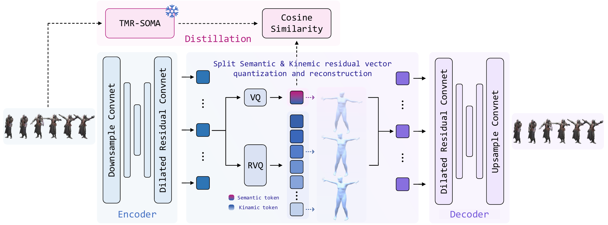
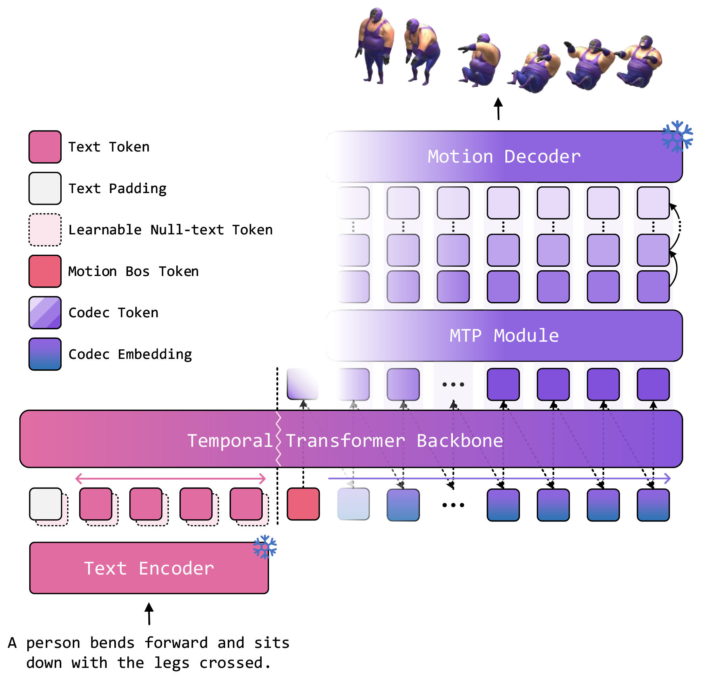
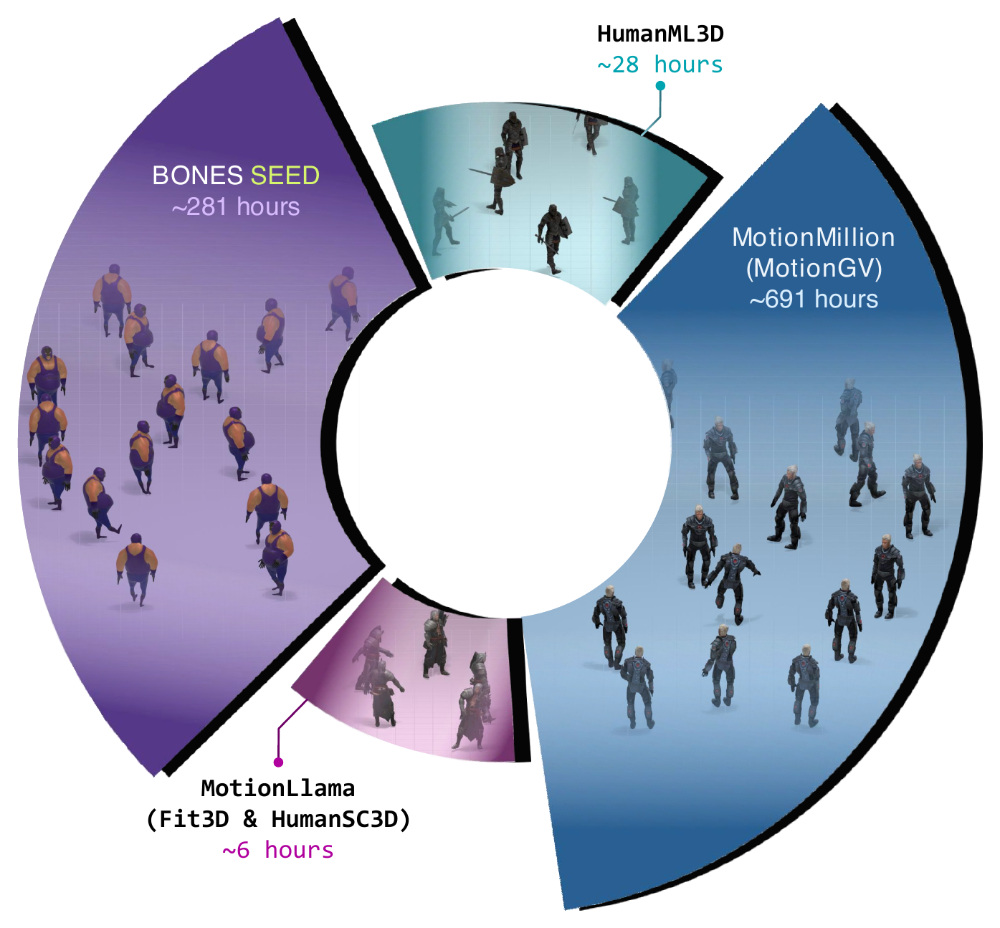
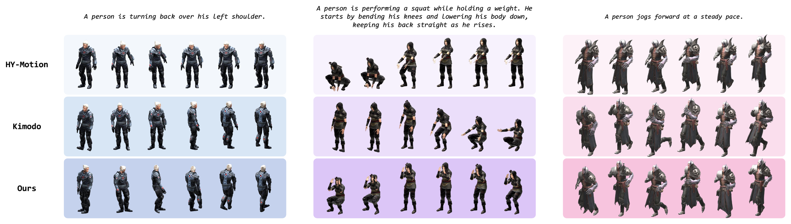

Split quantization
A single semantic VQ runs beside — not inside — the kinematic RVQ chain, so language alignment never reshapes the residual geometry.
1 + 15codes per packet, 12.5 Hz
Most motion tokenizers are trained for reconstruction alone, so action-level meaning and fine-grained kinematics share one distortion-ordered hierarchy. SeMoCo splits the two: a dedicated semantic quantizer is aligned to a frozen TMR-SOMA teacher, while a parallel residual quantizer keeps the detail needed to reconstruct the body.
A single semantic VQ runs beside — not inside — the kinematic RVQ chain, so language alignment never reshapes the residual geometry.
1 + 15codes per packet, 12.5 Hz
A temporal Transformer predicts the next semantic code; a lightweight depth decoder completes its kinematic residuals along the codebook axis.
188 / 391 MLite & Base generators
Five motion sources unified under the SOMA skeleton at 50 Hz, with provenance retained for source-wise evaluation.
1,006 h909,913 text–motion pairs
A stride-four convolutional encoder turns 50 Hz transition records into 12.5 Hz latents. Two projections split each latent: one is quantized by a single semantic codebook and aligned to the frozen teacher by a window-level cosine loss; the other is consumed by a 15-stage residual quantizer. Both are summed back into one decoder space.

mt packet layout
Placing the constraint on a parallel branch costs 0.40 mm of reconstruction against an unsupervised reference, versus 2.65 mm when it is applied inside the residual chain — while reaching the closest agreement with the teacher (.878 cosine).
Flattening sixteen codes per step into a single sequence makes the context sixteen times longer. Instead, the sixteen embeddings are summed into one packet token, so the temporal Transformer still runs at 12.5 Hz.

Every clip is converted to the SOMA-77 convention, resampled to 50 Hz, floor-aligned and canonicalized at its first frame. Splits are drawn over source recordings, so no two clips cut from the same take land in different partitions.

| Source | Pairs | Hours | Capture |
|---|---|---|---|
| MotionGV | 542,787 | 690.7 | Monocular video |
| BONES-SEED | 351,422 | 281.2 | Optical marker |
| HumanML3D | 14,094 | 28.1 | Optical marker |
| Fit3D | 922 | 5.1 | Optical marker |
| HumanSC3D | 688 | 0.9 | Optical marker |
| Total | 909,913 | 1,006.0 | — |
MPJPE-22 on the shared test split, where the compared codecs land at 78.95, 90.02 and 96.01 mm after a round trip through their native representations.
T1 Motion reconstruction · HumanML3D
| Method | MPJPE ↓ | Med. ↓ | PA-MPJPE ↓ |
|---|---|---|---|
| MoMask | 32.39 | 25.54 | 20.14 |
| MotionGPT3 | 42.38 | 31.58 | 33.49 |
| MotionMillion | 42.54 | 31.51 | 19.84 |
| SeMoCo | 19.22 | 17.36 | 16.42 |
Millimetres, 22 SMPL joints. Baselines on the official test set; SeMoCo on the HumanML3D portion of our split, which preserves the original partition.
T2 Motion prediction · observe 0.5 s, predict 2 s
| Method | ADE ↓ | FDE ↓ | minADE50 ↓ | minFDE50 ↓ |
|---|---|---|---|---|
| MotionGPT3 | 2.103 | 3.155 | 1.333 | 1.830 |
| MDM | 2.146 | 3.973 | 0.877 | 1.252 |
| MotionGPT | 2.637 | 3.943 | 1.531 | 2.086 |
| Ours-Lite | 1.228 | 2.449 | 0.695 | 1.095 |
| Ours-Base | 1.273 | 2.483 | 0.759 | 1.220 |
Metres. Lite outperforms Base here, reversing the text-to-motion ordering.
T3 Tokenizer ablation · matched 150 M generators
| RVQ layout | Sem. | FID ↓ | R@1 ↑ | R@3 ↑ | MedR ↓ | MPJPE-77 ↓ |
|---|---|---|---|---|---|---|
| Single-chain | ✕ | .202 | .483 | .663 | 1.65 | 15.60 |
| Single-chain | ✓ | .211 | .451 | .637 | 1.93 | 18.54 |
| Split-branch | ✕ | .226 | .319 | .490 | 3.83 | 13.70 |
| Split-branch | ✓ | .186 | .484 | .656 | 1.70 | 15.93 |
TMR-SOMA overall pool, mean over 30 repeats. Semantic supervision inside the split layout moves FID from .226 to .186 and R@1 from .319 to .484, at a cost of 2.23 mm reconstruction — a trade-off the single-chain layout does not reproduce.

Each clip pairs a reference motion on the left with the motion SeMoCo generates from the same caption on the right. Both are rendered on a stylized rig straight from the SOMA-77 skeleton, so hands and fingers move as generated.
A subset of motions is retargeted and tracked on physical hardware through a SONIC whole-body controller. Raw lab footage, no post-processing beyond a colour grade. Every take is on the strip below the player.
↓ Three takes, side by side
@article{huang2026semoco,
title = {SeMoCo: A Semantic-First Motion Codec for Motion Language Modeling},
author = {Huang, Tianlv and Guo, Hetian and Cai, Ziyi and Wang, Song and
Zhang, Yanping and Fan, Zipei and Song, Xuan and Wu, Guangming and
Zheng, Xin},
journal = {arXiv preprint arXiv:2608.24334},
year = {2026}
}